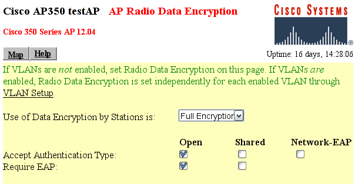

Kimlik kanýtlama iþlemi süresince Kimlik Kanýtlayýcý sadece Ýstemci ve Kimlik Kanýtlama Sunucusu (RADIUS) arasýndaki iletileri taþýr. Ýstemci ile Kimlik Kanýtlayýcý arasýnda EAPOL ve Kimlik Kanýtlayýcý ile Kimlik Kanýtlama Sunucusu arasýnda UDP kullanýlýr.
Birçok eriþim noktasý 802.1X (ve RADIUS) kimlik kanýtlamasý için desteðe sahiptir. Önce 802.1X kimlik kanýtlamasý kullanabilmesi için yapýlandýrýlmalýdýr.

Not EN'de 802.1X'i yapýlandýrma ve ayarlama iþlemleri satýcýlar arasýnda farklýlýk gösterebilir. Aþaðýda Cisco AP350'yi çalýþtýrmak için gereken ayarlar listelenmiþtir. TIKP, CCMP vs. gibi diðer ayarlar da ayrýca yapýlabilir.
AP, ESSID'i deneme aðýna ayarlanmalý ve etkinleþtirilmeli:
- 802.1X-2001: 802.1X Protokol sürümünün "802.1X-2001" 'e ayarlandýðýndan emin olun. Bazý eski Eriþim Noktalarý 802.1X standartýnýn sadece taslak sürümünü destekler (ve bu nedenle çalýþmayabilir).
- RADIUS Sunucu: RADIUS sunucunun isim/IP adresi ve RADIUS sunucu ile Eriþim Noktasý arasýnda paylaþýlan sýr (ki bu belgede "SharedSecret99" olarak geçer). Þekil 3.5'e bakýnýz.
- EAP Kimlik Kanýtlama: RADIUS sunucu EAP kimlik kanýtlamasý için kullanýlmalýdýr.
Þekil 3.6. Cisco AP350 Þifreleme yapýlandýrma ekraný
Cisco AP-350 için Þifreleme yapýlandýrma ekraný
- Sadece þifreli akýþa izin vermek için Tam Þifreleme kullanýlýr. 802.1X'in þifrelemesiz kullanýlabileceðine dikkat edin.
- Þifreleme anahtarlarý gelmeden önce Ýstemci ile Eriþim Noktasýný iliþkilendirmek için Açýk Kimlik Kanýtlama kullanýlýr. Ýliþkilendirme yapýlýr yapýlmaz Ýstemci, EAP kimlik kanýtlamasýna baþlayabilir.
- "Açýk Kimlik Kanýtlama" için EAP'ye ihtiyaç duyulur. Bu, sadece kimlik kanýtlamasý yapýlmýþ kullanýcýlarýn aða girmesine izin verilmesini saðlar.
Sýradan bir Linux düðümü bir telsiz Eriþim Noktasý ve Kimlik Kanýtlayýcý gibi davranacak þekilde ayarlanabilir. Linux'un AP olarak nasýl kurulup kullanýlacaðý bu belgenin kapsamý dýþýndadýr. Simon Anderson'un Linux Wireless Access Point HOWTO belgesi size kýlavuzluk edebilir.